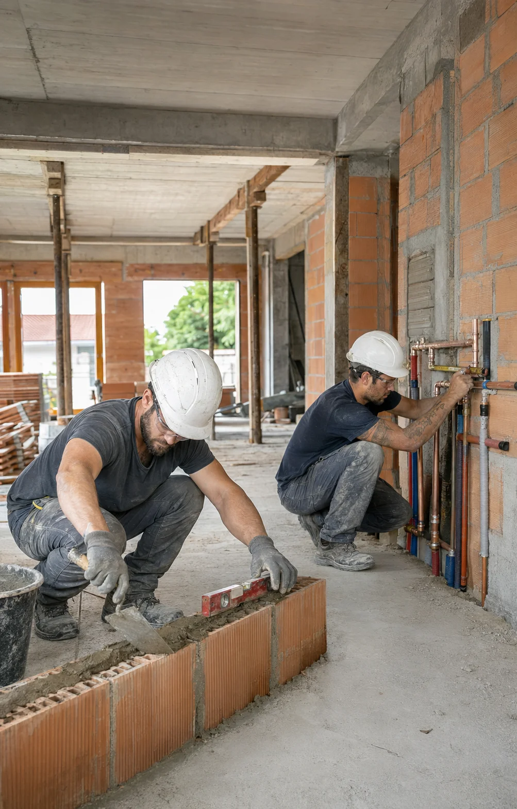

Analyse de votre activité
Nous échangeons sur votre métier, vos prestations, vos clients, votre zone d'intervention et vos objectifs.
Artisan du bâtiment
Montrez la qualité de votre travail avant même le premier rendez-vous. Central Web Agency crée des sites professionnels pour les artisans du bâtiment : réalisations, prestations, zones d'intervention et demandes de devis réunies dans une vitrine claire et rassurante, pensée pour développer votre présence locale.

Vos défis au quotidien
Votre réputation se construit sur la qualité de vos chantiers, mais vos futurs clients commencent souvent leurs recherches sur internet. Ils veulent voir vos réalisations, comprendre vos prestations, vérifier votre secteur d'intervention et savoir comment vous contacter rapidement.
Sans site bien structuré, vous laissez davantage de place aux annuaires et aux concurrents lorsqu'un particulier recherche un artisan dans votre secteur.
Vos chantiers sont votre meilleure preuve de savoir-faire. Sans galerie claire, vos futurs clients ne voient pas immédiatement la qualité de votre travail.
Un formulaire adapté peut recueillir les premières informations utiles avant votre échange et faciliter le traitement des demandes.
Avis, réalisations, assurances, certifications et présentation de l'entreprise contribuent à instaurer la confiance avant le premier contact.
Vos prospects doivent savoir immédiatement si vous intervenez dans leur commune ou leur secteur avant de vous solliciter.
Un site ancien, lent ou difficile à consulter sur téléphone peut donner une image qui ne correspond pas à la qualité réelle de vos prestations.
La solution
Un site d'artisan doit aller droit au but : ce que vous faites, où vous intervenez, à quoi ressemble votre travail et comment demander un devis. Chaque page doit aider votre futur client à comprendre votre savoir-faire et à vous contacter facilement.
Selon vos besoins, nous pouvons créer une vitrine simple et efficace ou un site dynamique avec administration, base de données et fonctionnalités avancées. L'objectif reste le même : vous fournir un outil professionnel cohérent avec votre entreprise.
La structure et les contenus du site sont travaillés pour améliorer votre présence sur les recherches liées à votre métier et à votre zone géographique.
Avant/après, galeries de chantiers et descriptions de prestations permettent à vos prospects de juger concrètement la qualité de votre travail.
Un parcours clair dirige les visiteurs vers une prise de contact ou un formulaire de devis adapté à votre activité.
Vous êtes artisan et souhaitez développer votre présence en ligne ? Parlons de votre projet.
Demander mon devis gratuitPour tous les corps de métier
Artisan indépendant, entreprise du bâtiment ou spécialiste d'un corps de métier : nous adaptons le site à vos prestations, vos chantiers et votre zone d'intervention.
Présentez installation, rénovation, dépannage, mise aux normes et secteurs d'intervention.
Mettez en avant vos prestations, dépannages, installations, rénovations et solutions de chauffage.
Valorisez vos finitions et transformations grâce à des galeries avant/après et des réalisations détaillées.
Présentez construction, extension, rénovation, murs, dalles et autres travaux de maçonnerie.
Expliquez vos prestations de toiture, zinguerie, charpente, entretien et rénovation.
Menuiserie, carrelage, plaquisterie, isolation ou rénovation générale : la structure s'adapte à votre spécialité.
Ce que votre site peut faire
Votre site doit rassurer, montrer votre travail et faciliter la prise de contact. Nous ajoutons uniquement les fonctionnalités utiles à votre entreprise.
Détaillez clairement vos métiers, interventions et types de travaux pour aider les visiteurs à identifier rapidement votre savoir-faire.
Présentez vos chantiers terminés avec des photos de qualité pour apporter une preuve concrète de votre expérience.
Mettez en évidence les transformations réalisées sur vos chantiers pour illustrer immédiatement la valeur de votre travail.
Un formulaire peut recueillir le type de travaux, la commune et les premières informations utiles avant votre prise de contact.
Présentez clairement les villes, départements ou secteurs dans lesquels vous vous déplacez.
Affichez des témoignages ou orientez vos visiteurs vers vos avis afin de renforcer la confiance avant une demande de devis.
Présentez les qualifications, assurances ou labels pertinents dont dispose votre entreprise, lorsqu'ils s'appliquent à votre activité.
Téléphone, formulaire et boutons d'action restent accessibles afin de réduire les obstacles entre la visite et la prise de contact.
Sur un site dynamique, une interface peut vous permettre de gérer certains contenus, réalisations ou informations selon le périmètre défini.
Votre site s'adapte aux smartphones afin que vos prospects puissent consulter vos prestations et vous contacter facilement.
Structure, contenus et balises fournissent de bonnes bases pour développer votre visibilité sur les recherches liées à votre métier et votre secteur.
Racontez votre expérience, votre méthode de travail, vos valeurs et les éléments qui permettent de mieux connaître votre entreprise.
Vous ne savez pas quelles fonctionnalités sont réellement utiles ? Nous vous conseillons gratuitement.
Être conseillé gratuitementQuelle solution pour vous
Pour beaucoup d'artisans, un site vitrine bien construit suffit pour présenter les prestations, montrer les chantiers et recevoir des demandes de devis. Un site dynamique devient intéressant lorsque vous souhaitez administrer des contenus ou intégrer des fonctionnalités plus avancées.
| Critère | Site vitrine | Site dynamique |
|---|---|---|
| Idéal pour | Visibilité, réalisations & demandes de devis | Gestion de contenus & fonctionnalités avancées |
| Présentation de l'entreprise | ||
| Prestations & réalisations | ||
| Formulaire de demande de devis | ||
| Administration avancée | ||
| Base de données | ||
| Fonctionnalités métier sur mesure | ||
| Tarif de création | À partir de 450€ TTC | À partir de 2 500€ TTC |
| Abonnement obligatoire | Non | Non |
| Maintenance optionnelle | À partir de 39€/mois | À partir de 99€/mois |
| Délai indicatif | 1 à 3 semaines | Selon les fonctionnalités |
Quelle que soit la solution choisie, aucun abonnement n'est obligatoire. Un site vitrine, à partir de 450€ TTC, convient parfaitement pour présenter votre entreprise, vos prestations et vos réalisations. Un site dynamique et administrable, à partir de 2 500€ TTC, permet d'ajouter une base de données et des fonctionnalités plus avancées. La maintenance reste entièrement optionnelle : à partir de 39€/mois pour un site vitrine et 99€/mois pour un site dynamique.
Un doute sur la formule à choisir ? Nous analysons vos besoins et vous orientons sans engagement.
Demander conseilNotre processus
De l'analyse de votre activité à la mise en ligne, vous validez les choix importants. Simple, clair et sans mauvaise surprise.
Nous échangeons sur votre métier, vos prestations, vos clients, votre zone d'intervention et vos objectifs.

Nous construisons la structure et l'identité visuelle de votre site, puis vous validez la maquette avant le développement.

Après validation, nous développons le site et intégrons vos contenus, prestations, photos de chantiers et fonctionnalités prévues.

Nous contrôlons le fonctionnement sur les différents écrans, puis nous publions votre site et organisons sa prise en main si nécessaire.
Nos tarifs
Site vitrine pour présenter votre savoir-faire ou site dynamique pour intégrer des fonctionnalités avancées : choisissez la solution adaptée à vos besoins. Dans les deux cas, aucun abonnement n'est obligatoire.
Prix TTC — TVA non applicable, art. 293B du CGI
Site vitrine
Une présence professionnelle pour présenter votre entreprise, vos prestations et vos réalisations. Paiement unique et aucun abonnement obligatoire.
Site dynamique & administrable
Une solution avec base de données et fonctionnalités avancées conçues autour des besoins de votre entreprise. Paiement unique et aucun abonnement obligatoire.
La maintenance est facultative.
Si vous souhaitez nous confier l'hébergement, la maintenance, les mises à jour et l'accompagnement, nos formules débutent à 39€/mois pour un site vitrine et 99€/mois pour un site dynamique. Vous restez libre de choisir cette option ou non.
Notre différence
Votre métier repose sur le concret et votre site doit en faire autant. Nous créons une présence numérique sur mesure qui valorise votre savoir-faire, facilite les demandes de contact et reste cohérente avec votre entreprise.
Nous prenons le temps de comprendre votre métier et votre façon de travailler avant de concevoir votre site.
Votre site reflète votre entreprise, vos spécialités, vos réalisations et votre positionnement.
Structure technique, balises et contenus sont travaillés pour fournir de bonnes bases de référencement.
Vos prestations et réalisations restent faciles à consulter sur smartphone, tablette et ordinateur.
Votre site clé en main vous appartient, sans abonnement de maintenance imposé.
Selon sa conception, votre site peut évoluer avec votre entreprise et accueillir de nouveaux contenus ou outils.
Après la livraison, nous restons joignables pour vous accompagner selon les modalités prévues.
FAQ
Une question sur votre futur site, nos tarifs ou le déroulement du projet ?
Poser ma questionUn site vitrine clé en main démarre à partir de 450€ TTC. Un site dynamique et administrable avec base de données et fonctionnalités avancées démarre à partir de 2 500€ TTC. Dans les deux cas, aucun abonnement n'est obligatoire.
Un site vitrine est généralement livré entre 1 et 3 semaines. Pour un site dynamique, le délai dépend des fonctionnalités et vous est précisé dans le devis avant le démarrage.
Oui. Une galerie peut présenter vos chantiers, vos réalisations et des photos avant/après afin de montrer concrètement votre savoir-faire.
Oui. Nous travaillons la structure technique, les contenus et le référencement local pour améliorer votre présence sur les recherches liées à votre métier et à votre zone géographique, sans garantir une position précise dans Google.
Oui. Un formulaire peut recueillir les coordonnées du prospect, le type de travaux, la commune et les premières informations nécessaires avant votre échange.
Oui, si votre projet prévoit un site dynamique et administrable. Une interface de gestion peut être conçue pour gérer certains contenus selon le périmètre défini. Si vous préférez déléguer la maintenance, une formule optionnelle débute à 99€/mois.
Pour beaucoup d'artisans, un site vitrine suffit pour présenter les prestations, les réalisations et recevoir des demandes de devis. Un site dynamique devient utile pour administrer davantage de contenus ou intégrer des fonctionnalités avancées.
Oui. Votre site clé en main vous appartient, qu'il s'agisse d'un site vitrine ou d'un site dynamique. Aucun abonnement n'est obligatoire : les formules de maintenance restent entièrement optionnelles.
Oui. Central Web Agency est basée à Heyrieux, près de Lyon, et peut accompagner des artisans et entreprises du bâtiment partout en France grâce à un suivi réalisable à distance.
Vous bénéficiez de 30 jours de retouches offertes sur le périmètre validé. Ensuite, vous pouvez gérer votre site selon les modalités prévues au projet ou choisir une maintenance optionnelle : à partir de 39€ par mois pour un site vitrine et 99€ par mois pour un site dynamique.
Oui. Les qualifications, assurances, labels pertinents et témoignages peuvent être présentés afin d'apporter aux visiteurs les informations utiles pour évaluer votre entreprise.
La création du site est proposée en paiement unique : à partir de 450€ TTC pour un site vitrine et de 2 500€ TTC pour un site dynamique. Aucun abonnement n'est obligatoire. La maintenance est proposée en option à partir de 39€ par mois pour un site vitrine et 99€ par mois pour un site dynamique.
Prêt à mettre votre savoir-faire en valeur ?
Plus de visibilité, des réalisations mises en valeur et des demandes de devis facilitées. Donnez à votre entreprise une présence en ligne à la hauteur de votre savoir-faire. Devis gratuit et sans engagement sous 24h.
Vous préférez écrire ? Utilisez le formulaire de contact, nous vous répondons rapidement.